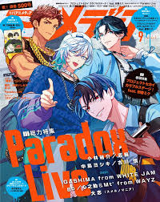
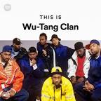
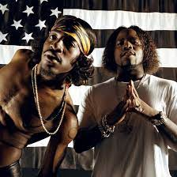

HIP-HOP ARTISTS

PARADOX LIVE
Paradox Live is a multimedia project that revolves around several fictional hip-hop groups, each with its own distinct style and characters. These groups include The Cat's Whiskers, cozmez, BAE, and more. The project blurs the lines between fiction and reality, as these virtual hip-hop acts also have real-life counterparts who perform their music in concerts.
MORE - Songs

WU-TANG CLAN
Wu-Tang Clan is a legendary hip-hop collective from New York known for their intricate lyricism, martial arts themes, and innovative production. They revolutionized the genre with their debut album, "Enter the Wu-Tang (36 Chambers)."
Song Links:
MORE Songs
PUBLIC ENEMY
Public Enemy, led by Chuck D and Flavor Flav, was known for their politically charged lyrics and socially conscious messages. Their album "It Takes a Nation of Millions to Hold Us Back" is a classic.
MORE Songs

OUTKAST
OutKast, consisting of André 3000 and Big Boi, is an Atlanta-based duo known for their genre-blending approach, witty lyrics, and iconic albums like "Stankonia" and "Aquemini."
MORE Songs